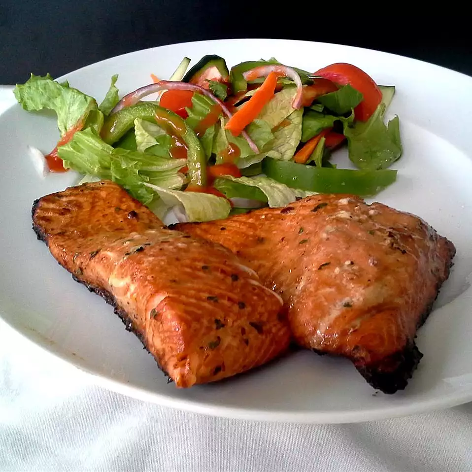

Spicy-Sweet Salmon

Description
Glazed salmon that is spicy and sweet!
Ingredients
- 1½ pounds fresh salmon fillet with skin removed
- ¼ cup red wine vinegar
- ¼ cup olive oil
- ¼ cup soy sauce
- ¼ cup water
- 1 tablespoon lemon juice
- ½ teaspoon red pepper flakes, or to taste
- 1 teaspoon onion powder
- 1 teaspoon garlic powder
- 2 teaspoons chopped fresh cilantro
- ⅓ cup brown sugar, packed
- salt and ground black pepper to taste
Instructions
- Place salmon in a shallow, flat dish, and set aside. Combine the vinegar, olive oil, soy sauce, water, lemon juice, red pepper flakes, onion powder, garlic powder, cilantro, and brown sugar in a blender. Blend until brown sugar dissolves. Pour the marinade over the salmon to cover evenly. Cover the dish, and refrigerate at least 2 hours.
- Line a broiling pan with foil. Remove salmon from marinade, and place on prepared broiling pan; season to taste with salt and pepper. Transfer remaining marinade to a saucepan.
- Turn on broiler to low.
- Broil salmon about 6 inches from the heat for 5 minutes; brush with remaining marinade. Broil an additional 5 to 10 minutes, brushing 2 or 3 more times with additional marinade. Salmon is done when fish is no longer bright red and can be flaked with a fork.
- Meanwhile, cook the remaining marinade over low heat until it thickens and reduces by one-third, 5 to 10 minutes. Use cooked marinade as a dipping sauce or drizzle over salmon just before serving.